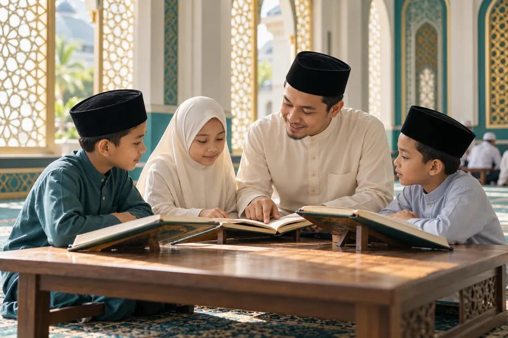

Latihan kemahiran pelbagai bidang
Latihan kemahiran pelbagai bidang seperti keusahawanan, AI, IT, kepimpinan dan sebagainya.

Membina Insan, Muafakat Masyarakat
Dan Kesejahteraan Bersama
Membina Insan, Muafakat Masyarakat Dan Kesejahteraan Bersama
Alif-Mim-Sin
Membina insan yang mengenal Allah SWT dan menjadikan pengabdian kepada-Nya sebagai asas kehidupan.
Jemaah yang teguh iman, istiqamah beribadah, dan berakhlak mulia.
Pengajian Fardhu Ain, al-Quran, bimbingan ibadah & mahabbah Rasul s.a.w.
Majlis Selawat, Majlis Zikir, bimbingan penyucian hati & pembentukan adab.
Pengimarahan solat berjemaah serta pembentukan kader dakwah.
Menyampaikan ilmu melalui ziarah rumah ke rumah & penerbitan risalah mingguan.

ILMU · IBADAH · AKHLAKMelahirkan generasi berilmu, mahir untuk memimpin khidmat masyarakat.
Membina insan teguh iman, menjaga ibadah & berakhlak.

Hubungan mendatar sesama kariah, melalui pengurusan yang amanah dan musyawarah.
Menyatukan kariah dengan pengurusan yang amanah, tersusun dan berteraskan musyawarah.
Kariah yang saling mengenali, menyantuni keluarga, menjaga kebajikan dan mengurus amanah secara bertanggungjawab.
Pemetaan keperluan keluarga: pendidikan, kebajikan, ekonomi dan sebagainya.
Mewujudkan Tabung Mahabbah melalui infaq mingguan khusus untuk aktiviti kebajikan & ekonomi masyarakat.
Ziarah mahabbah dari rumah ke rumah, ziarah asnaf & mengukuhkan kejiranan.
Gotong-royong, Pasar Komuniti, Hari Keluarga, sukan dan kegiatan kemasyarakatan.
Melahirkan masyarakat berilmu, berkemahiran, cinta agama & tanah air, memahami sejarah serta menghargai budaya & warisan.
Latihan kemahiran pelbagai bidang seperti keusahawanan, AI, IT, kepimpinan dan sebagainya.
Program cinta sejarah, watan, budaya & warisan.
Penghayatan isu semasa umat Islam seperti Palestin dan sebagainya.
Kerjasama institusi, NGO & agensi.
Masyarakat berdikari, memelihara warisan serta menyumbang kepada keamanan dan kesejahteraan bersama.

Memfokuskan pembangunan spiritual dan pembentukan karakter individu bermula dari masjid.